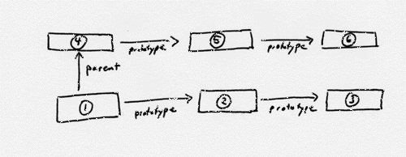
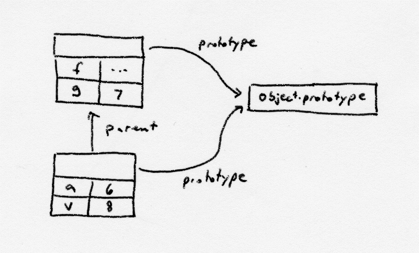

Before using Rhino in a concurrent environment, it is important to understand
the distinction between Contexts and scopes. Both are required to execute
scripts, but they play different roles. Simple embeddings of Rhino probably
won't need any of the information here, but more complicated embeddings can
gain performance and flexibility from the techniques described below.
To associate the current thread with a Context, simply call the enter method of Context:
Context cx = Context.enter();
Once you are done with execution, simply exit the Context:
Context.exit();
These calls will work properly even if there is already a Context associated
with the current thread. That context will be returned and an internal counter
incremented. Only when the counter reaches zero will it be disassociated from
the thread.
Remember to put the exit() call in a finally block if
you're executing code that could throw an exception.
It's important to understand that a scope is independent of the Context that created it. You can create a scope using one Context and then evaluate a script using that scope and another Context (either by exiting the current context and entering another, or by executing on a different thread). You can even execute scripts on multiple threads simultaneously in the same scope. Rhino guarantees that accesses to properties of JavaScript objects are atomic across threads, but doesn't make any more guarantees for scripts executing in the same scope at the same time. If two scripts use the same scope simultaneously, the scripts are responsible for coordinating any accesses to shared variables.
A top-level scope is created by calling Context.initStandardObjects to create all the standard objects:
ScriptableObject scope = cx.initStandardObjects();
The easiest way to embed Rhino is just to create a new scope this way whenever
you need one. However, initStandardObjects is an expensive method
to call and it allocates a fair amount of memory. We'll see below that there
are ways to share a scope created this way among multiple scopes and threads.

Order of lookups in a two-deep scope chain with prototypes.
For a more concrete example, let's consider the following script:
var g = 7;We have a top-level variable g, and the call to f will create a new top-level variable x. All top-level variables are properties of the scope object. When we start executing f, the scope chain will start with the function's activation object and will end with the top-level scope (see diagram below). The activation object has two properties, 'a' for the argument, and 'v' for the variable. The top-level scope has properties for the variable g and the function f.
function f(a) {
var v = 8;
x = v + a;
}
f(6);

An example scope chain for a simple script.
When the statement x = v + a; is executed, the scope chain is traversed looking for a 'x' property. When none is found, a new property 'x' is created in the top-level scope.
So to share information across multiple scopes, we first create the object we wish to share. Typically this object will have been created with initStandardObjects and may also have additional objects specific to the embedding. Then all we need to do is create a new object and call its setPrototype method to set the prototype to the shared object, and the parent of the new scope to null:
Scriptable newScope = cx.newObject(sharedScope);
newScope.setPrototype(sharedScope);
newScope.setParentScope(null);
The call to newObject simply creates a new JavaScript object with
no properties. It uses the sharedScope passed in to initialize the
prototype with the standard Object.prototype value.
We can now use newScope as a scope for calls to evaluate scripts.
Let's call this scope the instance scope. Any top-level functions or
variables defined in the script will end up as properties of the instance
scope. Uses of standard objects like Function, String, or
RegExp will find the definitions in the shared scope. Multiple
instance scopes can be defined and have their own variables for scripts yet
share the definitions in the shared scope. These multiple instance scopes
can be used concurrently.
The ECMAScript standard defines that scripts can add properties to all standard library objects and in many cases it is also possible to change or delete their properties as well. Such behavior may not be suitable with shared scopes since if a script by mistake adds a property to a library object from the shared scope, that object would not be garbage collected until there re active references to the shared scope potentially leading to memory leaks. In addition if a script alters some of the standard objects, the library may not work properly for other scripts. Such bugs are hard to debug and to remove a possibility for them to occur one can use seal the shared scope and all its objects.
A notion of a sealed object is a JavaScript extension supported by Rhino and it means that properties can not be added/deleted to the object and the existing object properties can not be changed. Any attempt to modify sealed object throws an exception. To seal all objects in the standard library pass true for the sealed argument when calling Context.initStandardObjects(ScriptableObject, boolean):
ScriptableObject sealedSharedScope = cx.initStandardObjects(null, true);This seals only all standard library objects, it does not seal the shared scope itself thus after calling initStandardObjects, sealedSharedScope cab be farther populated with application-specific objects and functions. Then after a custom initialization is done, one can seal the shared scope by calling ScriptableObject.sealObject():
sealedSharedScope.sealObject();Note that currently one needs to explicitly seal any additional properties he adds to the sealed shared scope since although after calling sealedSharedScope.sealObject(); it would no be possible to set the additional properties to different values, one still would be able to alter the objects themselves.
With Rhino 1.6, it is possible to use dynamic scope. With dynamic scope, functions look at the top-level scope of the currently executed script rather than their lexical scope. So we can store information that varies across scopes in the instance scope yet still share functions that manipulate that information reside in the shared scope.
The
DynamicScopes example
illustrates all the points discussed above.
The answer to (1) determines which scope should be the ultimate parent
scope: Rhino follows the parent chain up to the top and places the variable
there. After you've constructed your parent scope chain, the answer to question
(2) may indicate that there are additional scopes that need to be searched
that are not in your parent scope chain. You can add these as prototypes
of scopes in your parent scope chain. When Rhino looks up a variable, it
starts in the current scope, walks the prototype chain, then goes to the
parent scope and its prototype chain, until there are no more parent scopes
left.